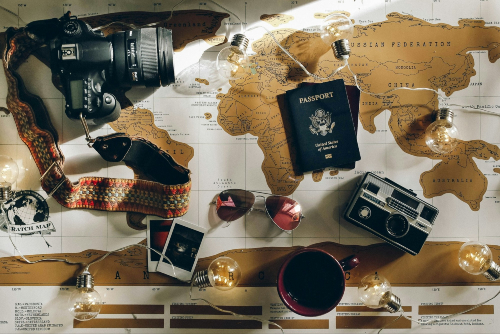

General Info
Hello, my name is Chance and I love to travel, snowboard, mountain climb and go on crazy adventures.
Here is a site about some places I have traveled. I love to travel and do so as often as I can. I have been to many places both here in the U.S. and internationally.
These are my experiences and maybe some intersting facts about these places.
I hope you enjoy this page of information and let me know if you have any tips for when I eventually go on my next adventure.
I like traveling because it breaks routine, introduces me to new cultures, and helps me grow as a person.Traveling opens your mind by showing you how other people live. You see different traditions, art, and daily habits. This helps you understand the world better and feel more connected to others.
Now, this space is dedicated to helping you find your own path and map out unforgettable adventures. You will find honest travel guides, practical budgeting tips, and immersive stories designed to spark your curiosity and build your confidence on the road.
Whether you are planning a weekend escape close to home or a massive cross-continental expedition, I want to show you that the world is entirely within your reach.
Sharing my journeys across the globe has turned my personal adventures into a lifelong passion for discovery. From wandering through ancient ruins in Italy and Spain to experiencing unforgettable wildlife encounters in Uganda and Tanzania, traveling has taught me a new way to see the world.
These roads shaped my worldview and proved that the most profound growth happens when we embrace different cultures, landscapes, and unexpected moments.
